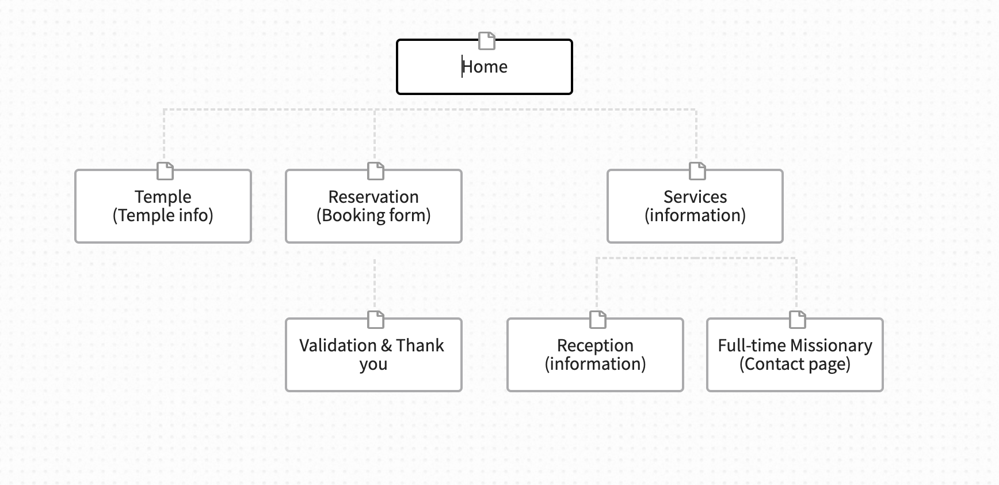

Temple Inn Suites Site Plan
Site Map
Home Page
It is a contemporary, exciting landing page providing images of temples and temple attending activities and must include the following:
- A call to action to make a hotel reservation
- Readily available navigation and contact information for the hotel chain
- Summary information about a temple of your choosing
- Social media links (at least two)
- Current weather card that summarizes the conditions. You must use the One Call API at openweathermap.org (https://openweathermap.org/api/one-call-api) and include the following content.
- The current temperature, current condition description, and humidity
Temple Page
The Temple page describes the details for at least four temples of your choice providing information about the address, telephone, email, services, history, ordinance schedule, session schedule, temple closure schedule. This information must be stored in a separate JSON file in order to be considered for full credit. You can store this .json file in another folder in your site folder. Display the temple information like a layout of 'cards'. You may elect to have additional information shown upon clicking a card. Provide a 'LIKE' button/interface that the user can click to 'like' a particular temple and that information is stored in localStorage. The next time a particular user visits, that 'like' indicator should be apparent.
Reservation Page
The Reservation page contains a form that collects relevant information when making a normal stay reservation including the location, date, number and type of rooms, registrant's full name, email, phone, home state or country, and special accommodations/comments. Make sure to do some form validation.
Services Page
The Services page provides a list with information of the amenities and special services offered at the hotel along with the following sub pages/content:
- The reception page displaying information about the wedding reception accommodations, including options for food service and setup.
- A full-time temple missionary page that provides information and images about the suites offered at the hotel with a simple Contact Us form for more details.